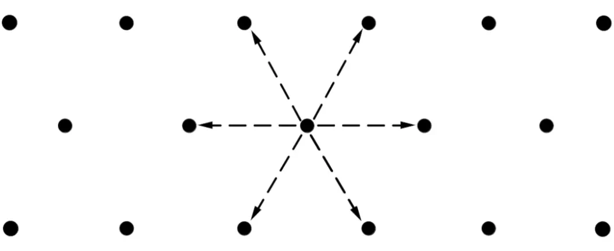

2 System
This section covers the map and basic game loop.
Map
Skirmishers uses dotted mapsheets. Dots are laid out in a hexagonal pattern, 1 inch apart, and 1 inch on the map represents 2.5 meters. Units occupy a single dot on the mapsheet and may move between adjacent dots. Models for individual units can have bases with a maximum diameter of 1 inch (25 mm).

Game Loop
Skirmishers is an "I go, you go" (IGOUGO) system, with each side activating all of their units on their turn. Each turn represents approximately 5 seconds of combat action. One side randomly is chosen to start and then the two sides alternate until the game is complete. The basic flow of the game is as follows:
-
Side 1 Activates
- Remove all firing arc tokens for Side 1.
- Move units one at a time. If a unit activates in or moves into an enemy’s firing arc, resolve the attack immediately if the enemy unit chooses to fire.
- At the end of each unit’s movement, that unit may take a combat action.
- After all units have moved, resolve any explosives.
-
Side 2 Activates
- Remove all firing arc tokens for Side 2.
- Move units one at a time. If a unit activates in or moves into an enemy’s firing arc, resolve the attack immediately if the enemy unit chooses to fire.
- At the end of each unit’s movement, that unit may take a combat action.
- After all units have moved, resolve any explosives.